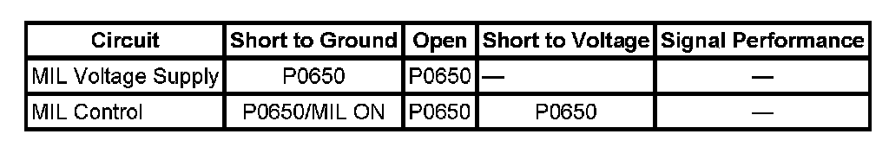

P0650
DTC P0650
DTC DESCRIPTOR
DTC P0650
Malfunction Indicator Lamp (MIL) Control Circuit
DIAGNOSTIC FAULT INFORMATION

Perform the Diagnostic System Check - Vehicle prior to using this diagnostic procedure. Initial Inspection and Diagnostic Overview
CIRCUIT/SYSTEM DESCRIPTION
The malfunction indicator lamp (MIL) is located on the instrument panel cluster (IPC).
The MIL informs the driver that an emission system fault has occurred and that the engine control system requires service. The control module monitors the MIL control circuit for conditions that are incorrect for the commanded states of the MIL.
CONDITIONS FOR RUNNING THE DTC
- The ignition is in the Run or Crank position.
- The ignition voltage is between 9-18 volts.
- DTC P0650 runs continuously when the ignition is ON.
CONDITIONS FOR SETTING THE DTC
The control module detects that the commanded state of the MIL driver and the actual state of the control circuit do not match for more than 5 seconds.
ACTION TAKEN WHEN THE DTC SETS
DTC P0650 is a Type B DTC.
CONDITIONS FOR CLEARING THE MIL/DTC
DTC P0650 is a Type B DTC.
CIRCUIT/SYSTEM VERIFICATION
Ignition ON, the MIL should turn ON and OFF when commanded with a scan tool.
CIRCUIT/SYSTEM TESTING
1. Ignition OFF, disconnect the harness connector at the IPC.
2. Ignition ON, verify that a test lamp illuminates between the ignition circuit and ground.
- If the test lamp does not illuminate, test the ignition circuit for a short to ground or an open/high resistance. If the circuit tests normal and the ignition circuit fuse is open, replace the IPC.
3. Connect a test lamp between the control circuit and the ignition circuit.
4. Command the MIL ON and OFF with a scan tool. The test lamp should turn ON and OFF when changing between the commanded states.
- If the test lamp is always ON, test the control circuit for a short to ground. If the circuit tests normal, replace the ECM.
- If the test lamp is always OFF, test the control circuit for a short to voltage or an open/high resistance. If the circuit tests normal, replace the ECM.
5. If all circuits test normal, replace the IPC.
REPAIR INSTRUCTIONS
Perform the Diagnostic Repair Verification after completing the diagnostic procedure.
- Control Module References
- Instrument Cluster Replacement (Cadillac) Instrument Cluster Replacement (Except Cadillac). Verification Tests